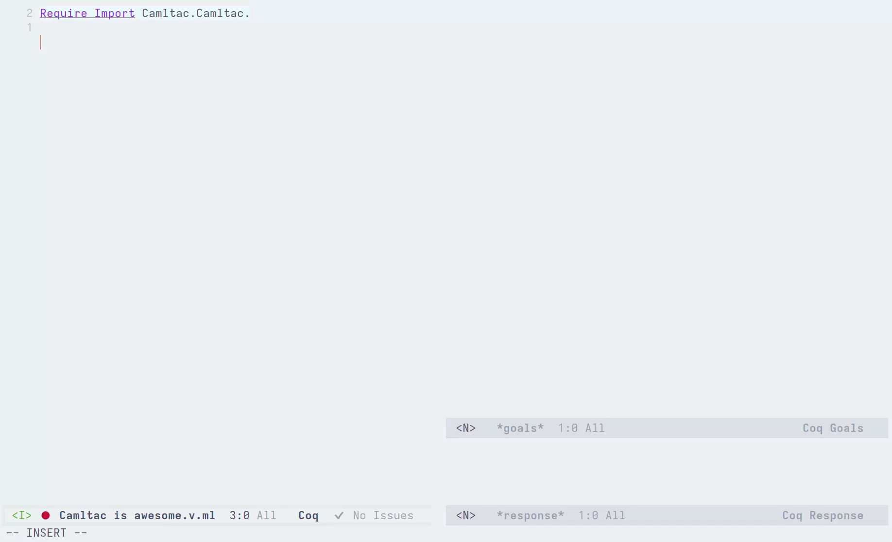

How to configure your editor#
Attention
Editor support is a work-in-progress; in the meantime, the following page describes the current solutions.
Emacs#
Here is a setup that works relatively well. It provides autocomplete for Rocq and Ltac2 APIs, but does not provide autocomplete for Camltac modules or other packages.
This setup is based on the OCaml language server and requires:
polymodeinstalled (M-x package-install RET polymode RET);You must not use
.merlinfiles (we use a.merlinfile to provide custom information to the language server);Your filenames must end with
.v.ml(the OCaml language server only accepts.mlfiles).
Copy the following code to your Emacs configuration:
(use-package polymode
:mode ("\\.v\\.ml$" . poly-camltac-mode)
:config
(define-hostmode poly-camltac-hostmode :mode 'coq-mode)
(define-innermode poly-camltac-ocaml-innermode
:mode 'tuareg-mode
:head-matcher (rx "ocaml:{{")
:tail-matcher (rx "}}")
:head-mode 'host
:tail-mode 'host)
(define-polymode poly-camltac-mode
:hostmode 'poly-camltac-hostmode
:innermodes '(poly-camltac-ocaml-innermode)))
In the root of your project, create a .merlin file with the following contents:
S */*.v
B .camltac/modules
PKG rocq-runtime.boot
PKG rocq-runtime.checklib
PKG rocq-runtime.clib
PKG rocq-runtime.config
PKG rocq-runtime.config.byte
PKG rocq-runtime.coqargs
PKG rocq-runtime.coqdeplib
PKG rocq-runtime.coqworkmgrapi
PKG rocq-runtime.dev
PKG rocq-runtime.engine
PKG rocq-runtime.gramlib
PKG rocq-runtime.interp
PKG rocq-runtime.kernel
PKG rocq-runtime.lib
PKG rocq-runtime.library
PKG rocq-runtime.parsing
PKG rocq-runtime.perf
PKG rocq-runtime.plugins
PKG rocq-runtime.plugins.btauto
PKG rocq-runtime.plugins.cc
PKG rocq-runtime.plugins.cc_core
PKG rocq-runtime.plugins.derive
PKG rocq-runtime.plugins.extraction
PKG rocq-runtime.plugins.firstorder
PKG rocq-runtime.plugins.firstorder_core
PKG rocq-runtime.plugins.funind
PKG rocq-runtime.plugins.ltac
PKG rocq-runtime.plugins.ltac2
PKG rocq-runtime.plugins.ltac2_ltac1
PKG rocq-runtime.plugins.micromega
PKG rocq-runtime.plugins.micromega_core
PKG rocq-runtime.plugins.nsatz
PKG rocq-runtime.plugins.nsatz_core
PKG rocq-runtime.plugins.number_string_notation
PKG rocq-runtime.plugins.ring
PKG rocq-runtime.plugins.rtauto
PKG rocq-runtime.plugins.ssreflect
PKG rocq-runtime.plugins.ssreflect_rewrite
PKG rocq-runtime.plugins.ssrmatching
PKG rocq-runtime.plugins.tauto
PKG rocq-runtime.plugins.zify
PKG rocq-runtime.pretyping
PKG rocq-runtime.printing
PKG rocq-runtime.proofs
PKG rocq-runtime.rocqshim
PKG rocq-runtime.stm
PKG rocq-runtime.sysinit
PKG rocq-runtime.tactics
PKG rocq-runtime.toplevel
PKG rocq-runtime.vernac
PKG rocq-runtime.vm
PKG ppx_rocq.runtime
PKG rocq-camltac.plugin.runtime
PKG rocq-camltac.plugin.api
FLG -open Api
FLG -open Prelude
FLG -short-paths
FLG -no-alias-deps
FLG -pp 'ppx_rocq -as-pp --use-compiler-pp --cookie ppx_rocq.camltac_mode=true'
Type ocaml:{{ and see it in action:


VSCode#
Currently, we do not have specialized support for Camltac in VSRocq, but we would like to in the near-future. If you are interested in implementing such a feature, please reach out!